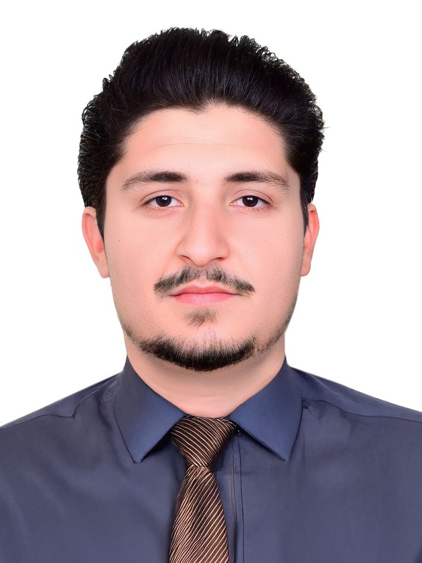

Open to internships & research opportunities · from January 2027
I build technology that sees|
Hi, I'm Noman, an M2 student in Biometrics & Intelligent Systems at UPEC (Paris). I work at the intersection of research and engineering: AI, computer vision and software, with a published paper on deep learning for solar-panel defect detection.
- 15/20 M1 result, with honors
- 3.79/4 BS IT CGPA, silver medalist
- 1 published CNN research paper

From building software to doing research in intelligent systems.
I started in Information Technology, where I finished a BS with a 3.79/4 CGPA and a silver medal. I worked as a software developer at RAGE Custom while completing Python, data science and AI courses on Coursera. In my final bachelor year I co-authored SolarAI, a CNN-based system for spotting defects in solar panels.
That led me to Paris and a Master's at UPEC in Biometrics & Intelligent Systems. I completed M1 (2025–2026) with honors and I'm now in M2 (2026–2027), looking for an internship or research opportunity where I can apply machine learning, computer vision and solid engineering to real problems.
Projects
Published research: SolarAI
Solar-Panel Optimization & Defect Resolution using CNN
A convolutional neural network approach to detect defects in solar panels so they can be found and fixed early, keeping energy output high. Written with my colleagues during my final bachelor year and published on ResearchGate.
Read the paperSkills
Journey
M2 Biometrics & Intelligent Systems
Université Paris-Est Créteil (UPEC), France. Looking for an internship or research opportunity from January 2027.
Software Developer, RAGE Custom
- Designed and delivered software for client needs, talking directly with clients to understand requirements.
- Managed tasks and deadlines in a collaborative team, adapting quickly as priorities shifted.
- Kept quality high through attention to detail, reliable follow-through and strong digital skills.
M1 Biometrics & Intelligent Systems
UPEC. Completed with honors (15/20). Face recognition, image processing, machine learning.
Python for Everybody Specialization
University of Michigan via Coursera. Five courses from Python basics to databases and a data-visualization capstone. Verify certificate
SolarAI research paper
Co-authored a CNN-based solar-panel defect detection paper with colleagues.
BS Information Technology
PMAS-Arid Agriculture University Rawalpindi, Pakistan. CGPA 3.79/4.00, silver medalist.
Let's work on something together.
Looking for an M2 internship from January 2027, and open to research and other opportunities, in AI, computer vision, machine learning, biometrics or software. France or abroad.
noman.khan.job@gmail.com · Paris, France